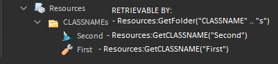

Resources¶
Resources is the core resource manager and library loader for RoStrap. It is designed to streamline the retrieval and networking of resources and centralize the loading of libraries.
Functionality¶
Upon being required on the server for the first time, Resources moves libraries within ServerStorage.Repository to folder ReplicatedStorage.Resources.Libraries, where both the client and server can require them via the function LoadLibrary.

- Only Folders and libraries should go in this repository.
- Folder heiarchy of libraries is ignored.
- A ModuleScript and its descendants are considered a single library.
- Thus, only parent ModuleScripts will be accessible via
LoadLibrary
- Thus, only parent ModuleScripts will be accessible via
- Anything within the Repository with "Server" (case-sensitive) in its name as well as its children will not be accessible to clients
- This includes Folders, libraries, and descendants of libraries.
- Server-only objects will be located within folder
ServerStorage.Resources
Info
Internally, LoadLibrary caches and returns require(Resources:GetLibrary(LibraryName)). GetLibrary is the only function that can "retrieve" objects from both ServerStorage and ReplicatedStorage. This is because server libraries are added directly to its cache.
API¶
All methods of Resources have hybrid syntax, meaning they can be called using either a : or .
LoadLibrary¶
Variant Resources:LoadLibrary(string LibraryName)
A require-by-string function which internally calls require(Resources:GetLibrary(string LibraryName)) and caches the results.
Example
local SortedArray = Resources:LoadLibrary("SortedArray") -- Some people like to overwrite the default require function local require = Resources.LoadLibrary local Signal = require("Signal")
Info
This is the only function with a hard-coded name for its cache, so you may access cached require results using the following:
-- Resources uses this table to cache LoadLibrary results local LoadedLibraries = Resources:GetLocalTable("LoadedLibraries")
Get functions¶
Ref<Instance> Resources:GetCLASSNAME(string InstanceName)
Get functions can be procedurally generated by Resources at run-time in the form of Resources:GetCLASSNAME(string InstanceName). These functions return an Instance named InstanceName under Resources:GetFolder(CLASSNAME:gsub("y$", "ie") .. "s"). On the server, missing instances will be instantiated via Instance.new. On the client, the function will yield for the missing instances via WaitForChild.

The following is the internal call tree. Keep in mind that these functions cache so the 3rd function will only run once per machine and GetFolder will only run once per function generation (e.g. the first time GetRemoteEvent is called).
| Step | Object to search for | Function call |
|---|---|---|
| 1 | RemoteEvent Chatted inside |
GetRemoteEvent("Chatted") |
| 2 | Folder RemoteEvents in |
GetFolder("RemoteEvents") |
| 3 | Resources |
ROOT |

Info
- Caches results in
Resources:GetLocalTable(CLASSNAME:gsub("y$", "ie") .. "s")
Example
Get functions can also manage instance types that aren't instantiable by Instance.new. However, these instances must be preinstalled in the locations in which they would otherwise be instantiated because they cannot be generated at run-time. This allows you to do things like the following:
local Falchion = Resources:GetSword("Falchion")

GetLocal functions¶
Ref<Instance> Resources:GetLocalCLASSNAME(string InstanceName)
Get functions in the form of GetLocalCLASSNAME work in the same way as regular Get functions, except clients may also instantiate missing instances and GetLocalFolder searches in different locations. Not meant to be used very much.
| Machine | LOCALSTORAGE | LOCALRESOURCES |
|---|---|---|
| Server | ServerStorage |
ServerStorage.Resources |
| Client | Players.LocalPlayer.PlayerScripts |
Players.LocalPlayer.PlayerScripts.Resources |
| Step | Object to search for | Function call |
|---|---|---|
| 1 | BindableEvent Attacking inside |
GetLocalBindableEvent("Attacking") |
| 2 | Folder BindableEvents in |
GetLocalFolder("BindableEvents") |
| 3 | Folder LOCALSTORAGE.Resources |
LOCALRESOURCES |
Example
local Attacking = Resources:GetLocalBindableEvent("Attacking")
Here is what the above code would do if ran by the server versus what it would do if ran by a client:
| Server | Client |
|---|---|
 |
 |
Warning
In Play-Solo Mode, all local objects will go under ServerStorage, as there is no difference between the client and server. If you use identical Local-function calls on the client and server, this could cause conflicts in Play-Solo. The same problem applies to caches, which have "Local" appended to the front of the string to differentiate from regular caches. LOCALSTORAGE is typically just for GetLocalBindableEvent calls and having a place to store server-only Libraries, which are under GetLocalFolder("Resources").
GetLocalTable¶
table Resources:GetLocalTable(string TableName)
A function which caches a local table by string, and returns said table. Does not replicate. Useful for eliminating the need for _G or ModuleScripts which return an empty table.
Note
Because this is hard-coded and not procedurally generated, it doesn't obey the rules of other GetLocal functions.
Example
-- Can be used in any script on the same machine to get this table local MyItems = Resources:GetLocalTable("MyItems") -- {}
Info
Resources uses GetLocalTable internally, so you can access its internals using this function:
-- Resources uses this table to cache LoadLibrary results local LoadedLibraries = Resources:GetLocalTable("LoadedLibraries")